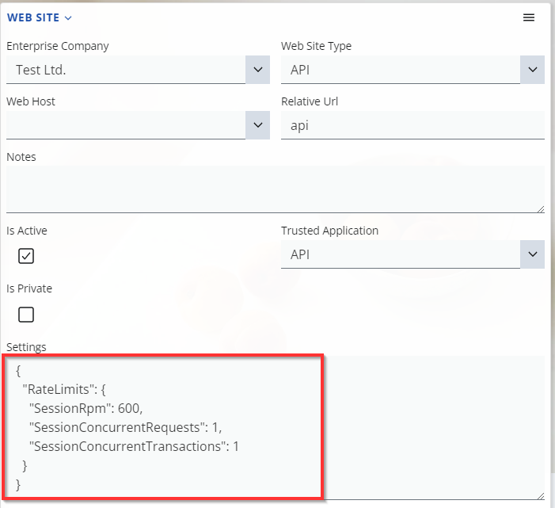
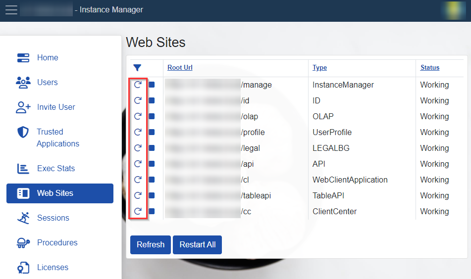

Rate limits
The rate limits in ERP.net are a set of limits, related to the requests per each session that can be made within a specified period. Rate limiting is used to prevent overloading and ensure fair usage for all users (i.e. sessions).
Exceeding any type of limit will result in an HTTP response 429 - Too Many Requests.
Types
ERP.net introduces several types rate limits, each targeting a specific use case. All are summarized in the following table and further described in more detail below:
| Rate limit | Config key | Default value |
|---|---|---|
| Requests per minute per session | SessionRpm |
600 |
| Concurrent requests per session | SessionConcurrentRequests |
1 |
| Concurrent transactions per session | SessionConcurrentTransactions |
1 |
SessionRpm
A session requests per minute rate limit (RPM) is a type of rate limit that restricts the number of API requests made within a single session, measured in minutes.
The default session RPM rate limit is set to 600, allowing for up to 600 requests to be made in a one-minute session. Exceeding the limit will result in an HTTP response 429 - Too Many Requests.
SessionConcurrentRequests
Session concurrent requests is a rate limit that restricts the number of concurrent API requests within a single session. The default limit is 1, allowing only one request at a time during a session. Exceeding the limit will result in an HTTP response 429 - Too Many Requests until the previous request is completed.
SessionConcurrentTransactions
Session concurrent transactions is a rate limit that restricts the number of concurrent API transactions within a session. The default behavior allows only one open transaction at a time during a session. Exceeding the limit will result in an HTTP response 429 - Too Many Requests until the previous transaction is open.
Configuring rate limits
The limits above are the default ones. You may specify others in the related web site definition.

The rate limits settings are expressed by a JSON object in a specific format. Here's what it looks like as part of a complete web site configuration:
{
"RateLimits": {
"SessionRpm": 600,
"SessionConcurrentRequests": 1,
"SessionConcurrentTransactions": 1
}
}
Note
To apply the changes, a restart of the website is required.
This task can be performed by your ERP.net instance administrator or by accessing the website Instance Manager and navigate to the 'Web Sites' section.
Тypically, Instance Manager is located at the following address: https://<your-erpnet-instance>.my.erp.net/manage
